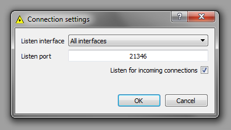

This dialog allows to adjust the way software interacts with other Aist-NT software. It allows to choose network interface (or all interfaces at once) and port for listening to incoming connections. "Listen for incoming connections" check box allows to turn on or off the ability of the software to be controlled externally.